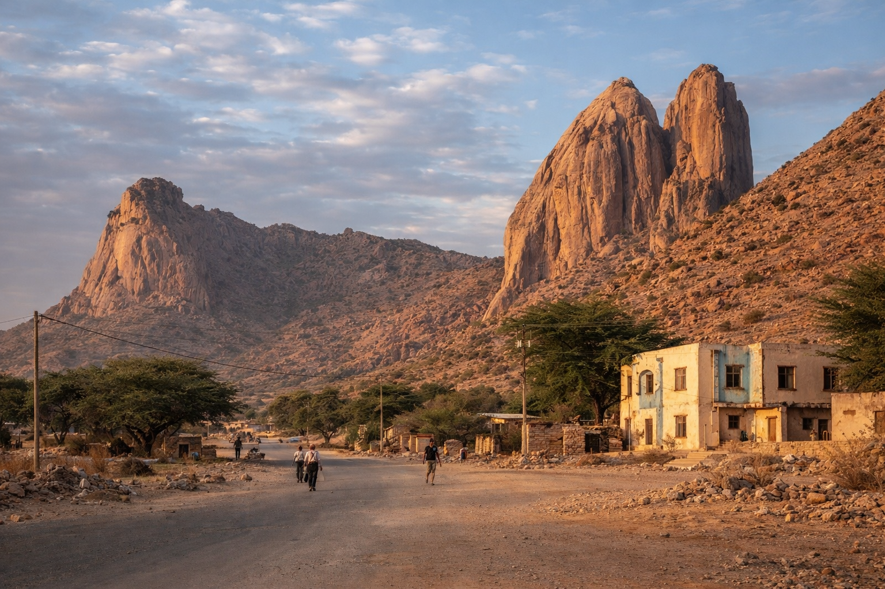

Asmara
75k
Asmara : Cité Art Déco
La plus grande concentration de bâtiments futuristes au monde (UNESCO)

RetourUne capsule temporelle entre modernisme Art Déco et splendeurs ottomanes
L'Érythrée est l'une des destinations les plus singulières d'Afrique. Sa capitale, Asmara, est un joyau architectural classé au patrimoine mondial de l'UNESCO, souvent décrite comme une "Petite Rome" pour sa concentration exceptionnelle d'édifices Art Déco et futuristes des années 1930. Sur les rives de la Mer Rouge, la cité portuaire de Massaoua dévoile un charme ottoman mélancolique avec ses palais de corail. Au-delà des villes, l'archipel des Dahlak offre des fonds marins parmi les plus préservés au monde, tandis que les monastères perchés des hauts plateaux témoignent d'une ferveur chrétienne millénaire.
Découvrez les 15 trésors cachés de l'Érythrée
La plus grande concentration de bâtiments futuristes au monde (UNESCO)

Ancien port ottoman aux palais de corail et ruelles chargées d'histoire

Plus de 200 îles vierges, paradis du snorkeling et des eaux turquoises

Célèbre pour son marché aux chameaux et son climat de montagne

Perché sur une montagne, centre spirituel majeur datant du XIVe siècle

Vestiges de l'ancienne civilisation aksumite et art rupestre préhistorique

Ancien port majeur de l'Empire d'Aksum sur la Mer Rouge

Obélisque pré-aksumite dominant des paysages de montagnes spectaculaires

Le "Poumon Vert" de l'Érythrée, une route panoramique à travers la jungle de montagne

Ville symbole de la résistance érythréenne, riche en sites historiques de la guerre d'indépendance

La plage préférée des habitants de Massaoua pour la baignade et les balades à chameau

Un chef-d'œuvre de style néo-roman italien au cœur de la capitale
Un témoignage poignant de l'histoire militaire du pays, devenu une curiosité urbaine
Superbe mosquée historique mêlant influences architecturales locales et arabes
Un bâtiment emblématique témoignant de l'époque du 'Petit Rome'
L'harmonie entre neuf ethnies et un héritage millénaire.
L'Érythrée est une nation de résilience et de fierté, forgée par une histoire complexe et une diversité culturelle exemplaire. Le pays abrite neuf groupes ethniques qui vivent dans une harmonie remarquable, chacun apportant ses propres traditions musicales, culinaires et artisanales. L'héritage de l'Empire d'Aksum sur les hauts plateaux se mêle aux influences ottomanes de la côte et à l'empreinte italienne indélébile d'Asmara. La culture du café, les rituels de l'Injera et le respect des traditions religieuses font de l'Érythrée une destination d'une authenticité rare en Afrique.
Le legs moderniste d'Asmara, où les cafés et les bâtiments des années 30 créent une atmosphère européenne sous les tropiques.
Un rituel social sacré de bienvenue, parfumé à l'encens et servi avec de l'orge grillée.
Une histoire qui remonte à l'Antiquité, visible dans les stèles de Metera et les ruines d'Adulis.
Neuf ethnies (Tigrinya, Tigre, Saho, Afar, etc.) unies par un sens profond de la nation et du respect mutuel.

L'artisanat d'exception érythréen. Des cafetières traditionnelles aux tissages fins.
 Cérémonie
Cérémonie
Cafetière traditionnelle en terre cuite réalisée à la main, pilier de la cérémonie du café érythréenne.
 Artisanat
Artisanat
Colliers et boucles d'oreilles en argent finement ciselé, spécialité des artisans d'Asmara.
 Tradition
Tradition
Tissu en coton blanc avec des bordures brodées à la main, utilisé pour les vêtements de fête.
Vannerie traditionnelle utilisée pour servir l'Injera, pièce décorative et fonctionnelle.
L'âme de la cuisine érythréenne, un mélange pimenté et aromatique pour tous vos plats.
Sélection de musiques traditionnelles et modernes (Kirar, Krar) pour s'évader.

Asmara, Grand Standing

Asmara, Historique & Chic

Asmara, Confort Moderne

Massaoua, Bord de Mer

Asmara, Central & Pratique

Asmara, Charme Vintage
La cuisine érythréenne est une aventure sensorielle, mêlant saveurs épicées et héritage méditerranéen.
Grande galette de teff fermentée, base de tous les repas érythréens.
Ragoût de bœuf pimenté au Berbere, le plat le plus emblématique du pays.
Purée de pois chiches épicée, onctueuse et savoureuse, adorée de tous.
Petit-déjeuner à base de pain rompu, de beurre clarifié épicé et de yaourt.
Poisson frais de la Mer Rouge grillé au four traditionnel, spécialité de la côte.
Bouillie consistante servie avec un cratère de beurre épicé et de yaourt au centre.
Servi lors d'une cérémonie traditionnelle avec de l'encens et des popcorns.
Un héritage italien : spaghettis et lasagnes revisités avec une touche locale.
Brioche traditionnelle aux fruits confits, incontournable dans les pâtisseries de la capitale.
Fèves mijotées servies avec de l'huile d'olive, du fromage frais et du pain.
Feuilles de chou ou épinards sautées à l'ail et à l'oignon, un délice végétarien.
Le fruit d'été par excellence, vendu à chaque coin de rue en saison.
Partagez la ferveur et la joie de l'Érythrée lors de ses grandes célébrations.
La plus grande célébration du pays (24 Mai) avec concerts et danses dans les rues d'Asmara.
Fête orthodoxe spectaculaire (Septembre) avec de grands feux de joie et des processions.
Le cyclisme est une passion nationale : assistez aux compétitions dominicales endiablées.
La période idéale pour les hauts plateaux (Asmara, Keren). Le ciel est dégagé et les températures sont printanières. Parfait pour les randonnées et les visites urbaines.
La meilleure saison pour la Mer Rouge (Massaoua, Dahlak). Évitez l'été (juin-août) où la chaleur sur la côte peut être extrême (> 40°C).
Pays extrêmement sûr pour les voyageurs. La criminalité est quasi-inexistante. Respectez les règles locales et évitez les zones frontalières.
Un permis de voyager est nécessaire pour sortir d'Asmara. Il s'obtient facilement auprès du ministère du tourisme dans la capitale.
Visa obligatoire. Les démarches peuvent prendre du temps, anticipez votre demande auprès de l'ambassade érythréenne.
Nakfa (ERN). L'économie repose sur l'espèce. Les cartes bancaires ne sont pas acceptées. Changez vos Euros ou Dollars dans les bureaux officiels Himbol.
Expert Architecture Art Déco
Dawit est un passionné de l'histoire d'Asmara et vous fera découvrir les joyaux cachés du modernisme italien.
Experte Mer Rouge & Dahlak
Native de Massaoua, Selam est votre guide idéale pour explorer les fonds marins de l'archipel des Dahlak.
Guide Histoire & Archéologie
Spécialiste des sites aksumites, Yonas vous accompagnera à Qohaito et Adulis pour un voyage dans le temps.